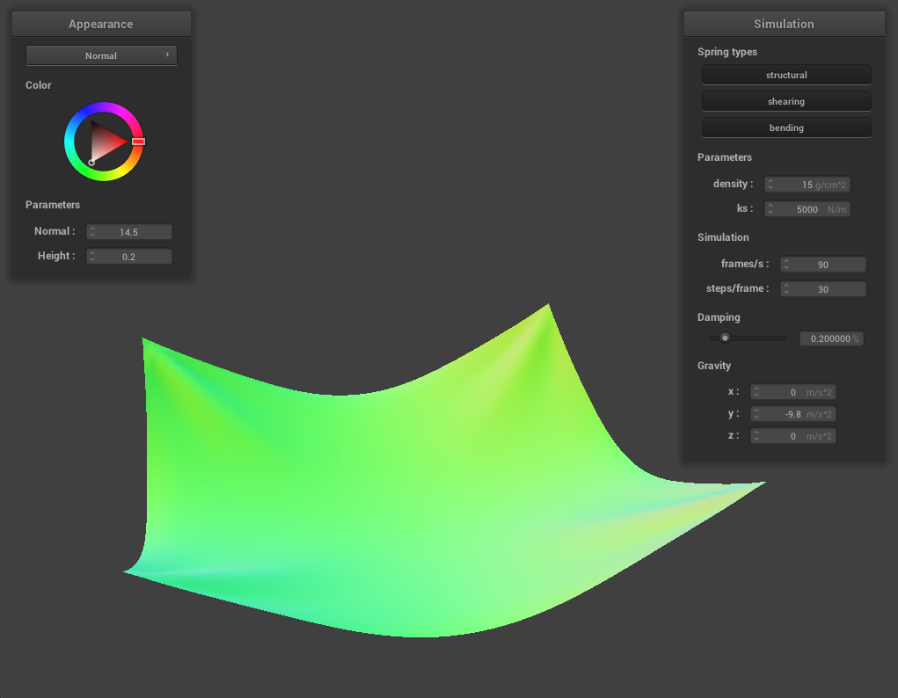
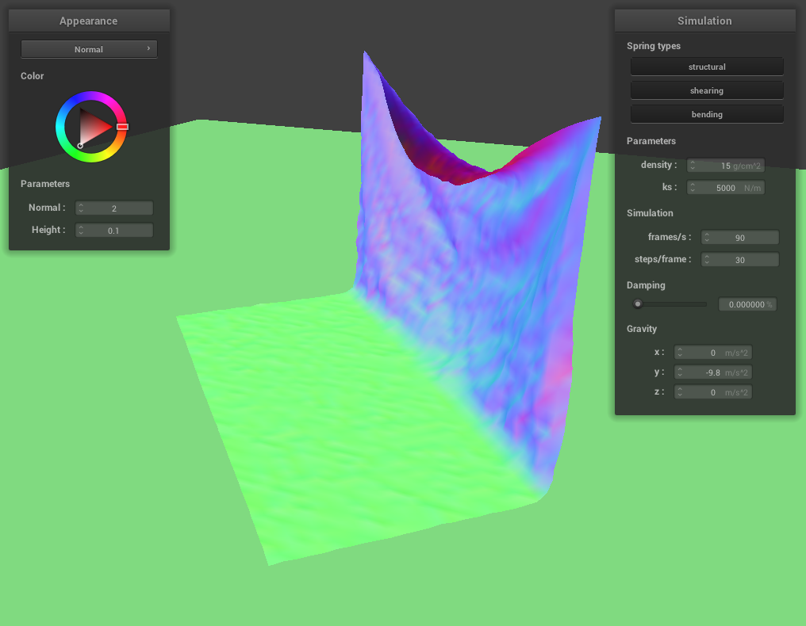

Part 2: Simulation via Numerical Integration
In this part of the project, I implemented the kinematics which determine how the system of springs and point masses interact with each other when inflicted with external forces (gravity being the sole external force in the renders produced for this part of the project).
These kinematic calculations were constructed such that the value of the spring constant, density of the cloth and damping.
Spring Constant Change: As the spring constant increases the cloth will sag less when it reaches its final position and will sag more at the final position when the spring constant decreases.
Density Change: The density of the cloth will mean that there is more force that the spring in the wireframe must react with. Due to Newtons force equation, F = ma, density change will have the inverse effect of spring constant change.
- Spring Constant Change: As the spring constant increases the cloth will sag less when it reaches its final position and will sag more at the final position when the spring constant decreases.
- Density Change: The density of the cloth will mean that there is more force that the spring in the wireframe must react with. Due to Newtons force equation, F = ma, density change will have the inverse effect of spring constant change.
- Damping Change: When the damping is higher the cloth maintains less of its momentum as there is more energy loss between time steps. As the damping approaches zero, the cloth will maintain more of this momentum/ energy from the previous time step and take longer to come to a rest.
A render of the peice of cloth in a resting state with its four corners pinned in stationary positions. Normal shading is used in this image.

The photo below demonstrates changes between spring constants and also changes in denstity:

The program is using zero damping in the photo below. It was not able to come to a complete stop because of this:
